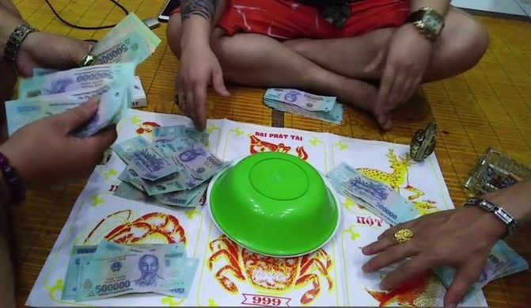

Trong những ngày Tết, bên cạnh tiếng cười đùa rộn ràng và không khí đoàn viên, các trò chơi dân gian như bầu cua thường trở thành điểm nhấn thu hút sự quan tâm của nhiều người. Đây là một trò chơi đơn giản, đòi hỏi ít dụng cụ, mang tính giải trí cao, đặc biệt khi quây quần cùng gia đình, bạn bè. Tuy nhiên, nếu đi kèm việc đặt cược bằng tiền hoặc hiện vật, trò chơi này không chỉ làm tăng tính may rủi mà còn tiềm ẩn những hệ quả mà người chơi đôi khi không để ý, từ việc dễ thua hơn thắng cho đến nguy cơ vướng vào các quy định pháp luật.
Giới thiệu về trò chơi bầu cua
Bầu cua là một trò chơi sử dụng 3 viên xúc xắc, mỗi viên có 6 mặt in hình: bầu, cua, tôm, cá, gà, nai. Người chơi sẽ đặt cược vào một trong 6 hình này, sau đó nhà cái tung xúc xắc. Kết quả sẽ được đối chiếu với lựa chọn của người chơi:
- Nếu mặt đặt cược xuất hiện trên xúc xắc, người chơi sẽ nhận thưởng tương ứng với số lần mặt đó xuất hiện.
- Nếu không, người chơi mất tiền cược.
Ví dụ
- Giả sử bạn đặt cược 10.000 đồng vào hình "cua":
- Nếu kết quả tung xúc xắc cho ra 1 mặt "cua", bạn sẽ được nhận lại 10.000 đồng (số tiền đã cược) cộng thêm 10.000 đồng tiền thưởng.
- Nếu xuất hiện 2 mặt "cua",bạn sẽ được nhận lại 10.000 đồng (số tiền đã cược) cộng thêm 2 lần thường là 20.000 đồng tiền thưởng.
- Ngược lại, nếu không có mặt "cua" nào, bạn sẽ mất toàn bộ 10.000 đồng đã đặt cược.
Chính sự đơn giản và tính may rủi này đã khiến trò chơi trở nên hấp dẫn trong các dịp lễ Tết. Tuy nhiên, nó cũng tiềm ẩn nhiều rủi ro mà không phải ai cũng lường trước được.
Tính toán tỷ lệ thắng trong trò chơi
Để hiểu rõ hơn về trò chơi, hãy cùng xem xét xác suất trúng thưởng trong mỗi lượt chơi.
Xác suất một viên xúc xắc không ra mặt đã đặt
Với mỗi viên xúc xắc, xác suất không xuất hiện mặt đặt cược là:
Với 3 viên xúc xắc, xác suất không trúng cả 3 viên là:
Xác suất trúng ít nhất một lần là:
Nhận xét: Với mỗi lần đặt cược, người chơi có gần 58% khả năng thua và chỉ 42% khả năng thắng. Điều này cho thấy, xét về dài hạn, người chơi dễ mất tiền hơn là thu lợi.
Nhà cái luôn có lợi
Nhà cái không cần đặt cược, nên luôn có lợi thế "lấy từ người chơi".
- Nếu có 6 người chơi, mỗi người đặt 10k vào một ô khác nhau:
- Nhà cái thu tổng: 60k.
- Kết quả xúc xắc chỉ có 3 mặt, nên chỉ có 3 trường hợp sảy ra
- chỉ có 1 mặt (kết quả giống nhau từ 3 viên):
Tiền trả lại: 10k tiền cược + 30k tiền thưởng = 40k
Lợi nhuận: 60k - 40k = 20k - có 2 mặt khác nhau:
Tiền trả lại: 20k tiền cược + 30k tiền thưởng = 50k
Lợi nhuận: 60k - 50k = 10k - có 3 mặt khác nhau:
Tiền trả lại: 30k tiền cược + 30k tiền thưởng = 60k
Lợi nhuận: 60k - 60k = 0
- chỉ có 1 mặt (kết quả giống nhau từ 3 viên):
Từ kết quả cho thấy Nhà cái không bao giờ lỗ, vì các kết quả có lợi nhuận đều dương hoặc hòa vốn.
Mặc dù trò chơi bầu cua có tính chất may rủi, nhưng nhà cái có thể áp dụng một số công cụ và thủ thuật để làm gia tăng khả năng chiến thắng và lợi nhuận. Điều này càng làm tăng thêm bất lợi cho người chơi, khiến họ càng khó có cơ hội thắng.
Rủi ro pháp lý khi tham gia trò chơi bầu cua
Bầu cua ban đầu là trò chơi dân gian để giải trí, nhưng khi có yếu tố đặt cược bằng tiền hoặc hiện vật, hành vi này có thể bị quy vào tội đánh bạc theo quy định của pháp luật Việt Nam. Cụ thể:
- Theo Bộ luật Hình sự, việc tổ chức hoặc tham gia các trò chơi ăn thua bằng tiền đều bị nghiêm cấm và có thể bị xử phạt hành chính hoặc hình sự.
- Điều này đồng nghĩa rằng, dù trò chơi mang tính truyền thống, việc đặt cược có thể khiến bạn đối mặt với hậu quả pháp lý nghiêm trọng.
Lời kết
Ngày Tết là dịp để sum vầy, tận hưởng niềm vui và xây dựng những kỷ niệm ý nghĩa bên gia đình. Thay vì tham gia các trò chơi có yếu tố may rủi và đặt cược, hãy lựa chọn những hoạt động lành mạnh như cùng chơi cờ vua, cờ tướng hoặc tổ chức các trò chơi dân gian không liên quan đến tiền bạc. Chúc bạn và gia đình một mùa Tết an khang, hạnh phúc, và tránh xa những rủi ro không đáng có!